%%{init: { 'theme': 'neutral' } }%%
gitGraph
checkout main
commit
commit
commit
8.1 Learning Objectives
In this lesson, you will learn:
- What is a branch in Git?
- How to use a branch to organize code
- What is a tag in Git and how is it useful for collaboration?
- New mechanisms to collaborate using Git
- What is a Pull Request in GitHub?
- How to contribute code to colleague’s repository using Pull Requests
8.2 Branches
Branches are a mechanism to isolate a set of changes in their own thread, allowing multiple types of work to happen in parallel on a repository at the same time. These are most often used for separating work from multiple collaborators so they don’t conflict, or trying out experimental work, or for managing bug fixes for historical releases of software. The default branch in most new repositories is called main, and it is the branch that is typically shown in the GitHub interface and elsewhere.
The main branch of a repository is shown above with three commits, each representing one specific version of the repository linked to its parent commit.
But main isn’t the only branch you can use in a repository. You can create more. Maybe you’re not so sure that a new idea will work out in code, and this is where a tool like Git shines. Without a tool like Git, we might copy analysis.R to another file called analysis-ml.R which might end up having mostly the same code except for a few lines. This isn’t particularly problematic until you want to make a change to a bit of shared code and now you have to make changes in two files, if you even remember to.
Instead, with Git, we can start a branch. Branches allow us to confidently experiment on our code, all while leaving the old code intact and recoverable.
%%{init: { 'theme': 'neutral' } }%%
gitGraph
checkout main
commit
commit
commit
branch new-analysis-ml
commit
commit
So you’ve been working in a branch and have made a few commits on it and your boss emails again asking you to update the model in some way. If you weren’t using a tool like Git, you might panic at this point because you’ve rewritten much of your analysis to use a different method but your boss wants the change to the old method.
But with Git and branches, we can continue developing our main analysis at the same time as we are working on any experimental branches. Using git checkout main, you can return the state of your working copy to the main branch, and make the needed change to the original code, all while saving the code in new-analysis-ml for later. Branches are great for experiments but also great for organizing your work generally, especially when each branch is tied to a ticket to discuss progress and issues on that line of work.
%%{init: { 'theme': 'neutral' } }%%
gitGraph
checkout main
commit
commit
commit
branch new-analysis-ml
commit
commit
checkout main
commit
After all that hard work on the machine learning experiment, you and your colleague could decide to scrap it. It’s perfectly fine to leave branches around and switch back to the main line of development, but we can also delete them to tidy up.
If, instead, you and your colleague had decided you liked the machine learning experiment, you could also merge the branch with your main development line. Merging branches is analogous to accepting a change in Word’s Track Changes feature but way more powerful and useful. With the merge, we take all of the changes from the branch, and apply them to the files in the target main branch (or whatever branch we are merging into). This might merge smoothly, or may generate a conflict that will need to be resolved if the same files had already been changed on main. Either way, when complete, there is a new merge commit showing where the two branches came together.
%%{init: { 'theme': 'neutral' } }%%
gitGraph
checkout main
commit
commit
commit
branch new-analysis-ml
commit
commit
checkout main
commit
checkout new-analysis-ml
commit
checkout main
merge new-analysis-ml tag: "final-paper-version"
commit
A key takeaway here is that Git can drastically increase your confidence and willingness to make changes to your code and help you avoid problems down the road. Analysis rarely follows a linear path and we need a tool that respects this. The key to that confidence, however, is in understanding what git does with your versions, and how to get back to a previous state when needed.
Finally, imagine that, years later, your colleague asks you to make sure the model you reported in a paper you published together was actually the one you used. Another really powerful feature of Git is tags which allow us to label a particular version of our code with a meaningful name. In this case, we are lucky because we tagged the version of our code we used to run the analysis at the time the paper was submitted. Even if we continued to develop beyond last commit (above) after we submitted our manuscript, we can always go back and run the analysis as it was in the past.
8.2.1 Exercise
Create a new branch in your training repository called new-feature, and then make changes to the RMarkdown files in the directory. Commit and push those changes to the branch. Now you can switch between branches using the GitHub interface.
This can be done directly in the RStudio interface within the Git pane using the new branch icon. Alternatively, you can run this line in the Terminal which will create a new branch and switch to it: git checkout -b new-feature
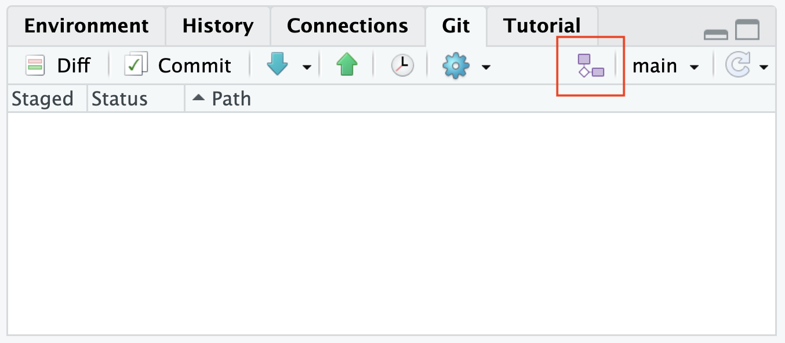
After you click that icon, a new dialog box appears where you can create a new branch. Keep the setting to “origin” and keep the box “Sync branch with remote” checked.
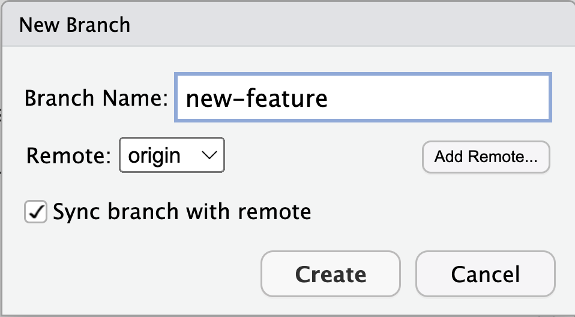
You can now work on the new-feature branch in this new workspace independently of the codebase in main, and without affecting it. When you have finished and completed your changes, you can either decide to leave it there, delete it, or merge it back to main. To merge this new feature branch back, first checkout the main branch with git checkout main, and make a change to one of the files in your main branch – commit that change, and you will see how you can have different changes stored in different branches. Your repository history should look something like this:
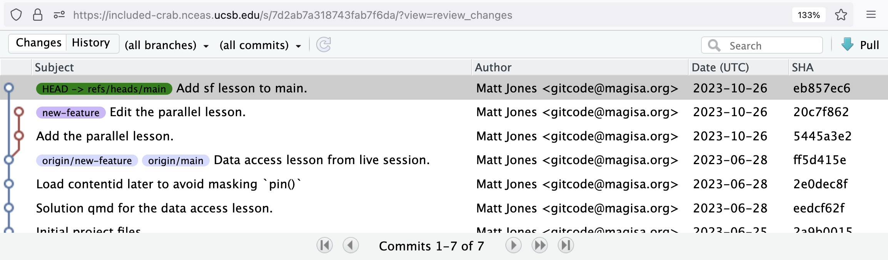
When you are ready to merge the feature branch back into main, all you have to do is run git merge new-feature from the commandline. After that is complete, your new feature will now be merged back into main and visible from the git history:
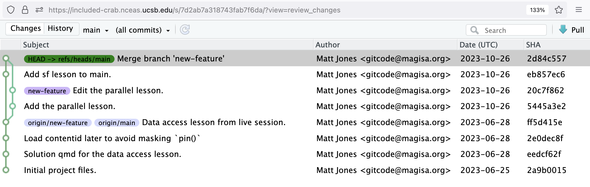
8.3 Why Git workflows are important
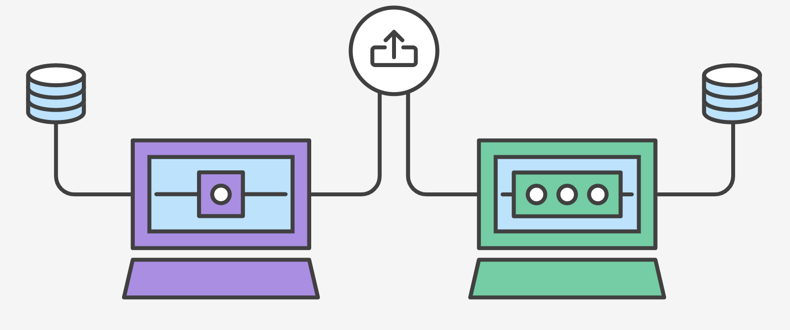
When working with a team on a Git-managed project, it’s important to make sure the team is in agreement on how the flow of changes will be applied. To ensure the team is on the same page, an agreed-upon Git workflow should be developed or selected (maybe something to add your DMP). There are several documented Git workflows that may be a good fit for your team. In this lesson, we will discuss two of these Git workflow options:
Remember that these workflows are designed to be guidelines rather than concrete rules. We want to show you what’s possible, so you can mix and match aspects from different workflows to suit your project’s needs.
8.4 Pull Requests

In previous chapters, we’ve gone over how to directly collaborate on a repository with colleagues by granting them write privileges as a Collaborator to your repository. This is useful with close collaborators, but also grants them tremendous latitude to change files and analyses, to remove files from the working copy, and to modify all files in the repository.
Pull requests represent a mechanism to more judiciously collaborate, one in which:
- First, a Collaborator can suggest changes to a repository
- Then, the Owner and Collaborator can discuss those changes in a structured way
- Finally, the Owner can review and accept all or only some of those changes to the repository
This is useful with open source code where a community is contributing to shared analytical software, to students in a lab working on related but not identical projects, and to others who want the capability to review changes as they are submitted.
We’ll be using Pull Requests in both the branch and forking workflow. Using pull requests with each of these workflows is slightly different, but the general process is as follows:
- A Collaborator creates a feature in their local repository
- Collaborator pushes the branch to the GitHub repository they’re collaborating on
- Collaborator opens a Pull Request on GitHub
- Owner or the rest of the team reviews the code, discusses it, and alters it (as neded)
- Owner or project maintainer merges the feature into the repository and closes the Pull Request
8.5 Branch Workflow
Branches are a mechanism to isolate a set of changes in their own thread, allowing multiple types of work to happen in parallel on a repository at the same time. These are most often used for trying out experimental work, or for managing bug fixes for historical releases of software. Here’s an example graph showing a branch2.1 that has changes in parallel to the main branch of development:

The default branch in almost all repositories is called main, and it is the branch that is typically shown in the GitHub interface and elsewhere. There are many mechanisms to create branches. The one we will try is through RStudio, in which we use the branch dialog to create and switch between branches.
8.5.1 How it Works
The core idea behind the Branch Workflow is that all project development should take place in a dedicated branch instead of the main branch. This makes it easy for multiple Collaborators to work on a particular part of the project without disturbing the main codebase. It also means the main branch will never contain broken code.
In general a branch workflow follows these steps:
8.5.1.1 Collaborator, in their workspace, creates a new branch for the feature or development they’re working on
This can be done directly in the RStudio interface within the Git pane using the new branch icon. Alternatively, you can run this line in the Terminal which will create a new branch and switch to it: git checkout -b ＜new-branch＞
After you click that icon, a new dialog box appears where you can create a new branch. Keep the setting to “origin” and keep the box “Sync branch with remote” checked.
This new branch has effectively created a copy of the main in this new workspace where you can work on a new feature independently of the codebase in main without affecting it.
8.5.1.2 When Collaborator has finalized their work, the will open and submit a Pull Request to the main branch
When you go to GitHub to open a Pull Request, GitHub will recognize that a new change has been pushed to the remote repository and will suggest opening a pull request.
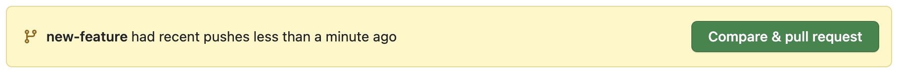
When you open a new Pull Request, you will be pushing your changes from your new branch to main. The Pull Request will automatically compare the codebase for both workspaces to determine if the two can be successfully merged. If not, you will need to reconcile the merge conflict before completing the Pull Request. If you see that you are “Able to merge” the two branches, then move forward by clicking “Create pull request.

8.5.1.3 Ideally, Owner reviews the Pull Request and discusses new code changes as necessary with Collaborator
It’s important to have a review process to avoid potential issues. In this case, the author of the Pull Request is being closed (and therefore not merged) since the pull request does not target the correct branch of the workflow. Ultimately, these discussions lead to greater successfull and smoother workflows on a collaborative project.
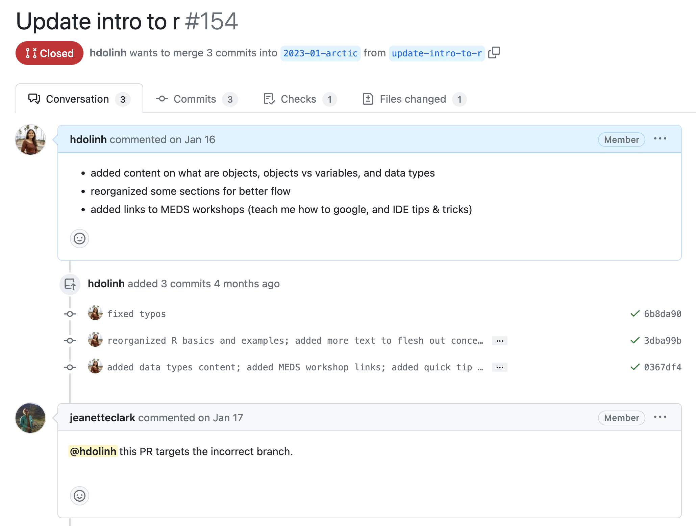
8.5.1.4 Owner merges the new feature or development into main and closes the Pull Request
Once the Pull Request has been reviewed, the reviewer can merge in the new feature which automatically closes the pull request.
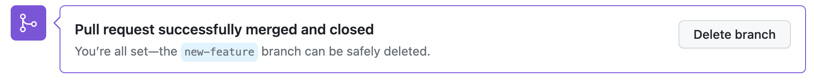
8.5.1.5 Everyone switches to main in their local workspace and Pulls so that they’re in sync with the new changes in the remote main
If you have merged all your new features into main from the new branch and will no longer need use the new branch, pull to sync up your local workspace (because merging creates a new commit and this commit exists on GitHub since it was created in GitHub). And to keep your repository clean, delete the branch. And note that you can always restore the branch if you need to return to it.
Now pair up with a partner and try this flow out in the Branch exercise.
8.5.2 Exercise: create a branch, make a change in a file, and submit a Pull Request
Instructions
- Make sure you’re in your
{ownerName}-{collaboratorName}repository that you created in the R Practice: Collaborating on, Wrangling & Visualizing Data session - Choose who is the Owner and who is the Collaborator
- Have the Collaborator make a new branch called
new-data-viz - In the new,
new-data-vizbranch, the Collaborator will open thelobster-report.Rmdfile and add some new visualization code to the file. - Collaborator uses the
Gitworkflow:Save -> Stage -> Commit -> Pull -> Push - Collaborator submits a Pull Request where they want to merge changes from
new-data-viztomain - Owner reviews the Pull Request and discusses new code with Collaborator, if needed
- After the review, Owner accepts the Pull Request, which will merge the new changes and close it
- Switch roles and repeat steps 1-8, where the Owner will add new vizualization code to the
lobster-report.Rmd
8.6 Forking Workflow
The Forking Workflow is fundamentally different than other popular Git workflows. Instead of using a single Git repository to act as the “central” codebase, it gives every Collaborator their own repository to work in. This means they are not a Collaborator on the repository they have forked from and therefore do not have write access to that original repository.
The Forking Workflow is most often seen in public open source projects.
The main advantage of the Forking Workflow is that contributions can be integrated without the need for everybody to push to a single central repository. Collaborators push to their own repositories, and only the Owner can push to the official repository. This allows the Owner to accept commits from any Collaborator without giving them write access to the official codebase.
The result is a distributed workflow that provides a flexible way for large, organic teams (including untrusted third-parties) to collaborate securely. This also makes it an ideal workflow for open source projects.
8.6.1 How it Works
In the following example, mbjones will be the repository Owner, and metamattj will be the Collaborator.
8.6.1.1 Collaborator first creates a fork of the owner’s repository
This fork is a cloned copy of the Owner’s repository that is separate but linked to the Owner’s repository. Here we see that the mbjones/training-test repository has been forked once.
To create a forked repository, visit the GitHub page for the Owner’s repository that you’d like to make changes to, and click the Fork button. This will create a clone of that repository in your own GitHub account that can be cloned to your local computer.
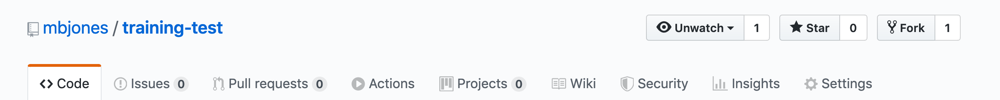
8.6.1.2 Collaborator clones their new forked repository into their local workspace
This cloned copy is in the Collaborator’s GitHub account, which means they have the ability to make changes to it. But they don’t have the right to change the original owner’s copy. So instead, they clone their GitHub copy onto their local machine, which makes the collaborator’s GitHub copy the origin as far as they are concerned. In this scenario, we generally refer to the Collaborator’s repository as the remote origin, and the Owner’s repository as upstream.
8.6.1.3 Collaborator makes changes to forked repository
Again, these changes are independent of the Owner’s repository that the Collaborator forked from. When they have completed their changes, they complete the Git workflow and push the changes to their remote forked repository.
At this point, the Collaborator’s local repository and their GitHub copy both have the changes that they made, but the Owner’s repository has not yet been changed.

8.6.1.4 Open a Pull Request to the upstream repository
Similar to the branch workflow, Collaborator submits a Pull Request (there may be be a notification on their repository from GitHub saying to compare and open a pull request). But dissimilar from the branch workflow, the Pull Request will be asking to submit changes from the Collaborator’s forked repository to the Owner’s upstream repository.
When the Collaborator’s visits their respository on GitHub, they will also see a message that says: This branch is 1 commit ahead of mbjones:main.

When the Collaborator clicks the named Pull Request button to create a pull request for the Owner to review, the Collaborator can provide a brief summary of the request, and a more detailed message to start a conversation about what you are requesting. It’s helpful to be polite and concise while providing adequate context for your request. This will start a conversation with the Owner in which you can discuss your changes, they can easily review the changes, and they can ask for further changes before the accept and pull them in. The Owner of the repository is in control and determines if and when the changes are merged.

8.6.1.5 Owner reviews Pull Request
Owner will get an email or GitHub notification that the Pull Request was created, and can see the pull request listed in their “Pull requests” tab of their repository.

The Owner can initiate a conversation about the change, or request further changes. The GitHub interface indicates whether there are any conflicts with the changes, and if not, gives the Owner the option to “Merge pull request”.

8.6.1.6 Owner merges Pull Request
Once the Owner thinks the changes look good, they can click the “Merge pull request” button to accept the changes and pull them into their repository copy. The Owner can edit the message, and then click “Confirm merge”.
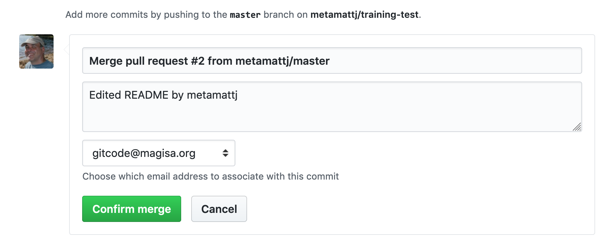
Yay, the Pull Request has now been merged into the Owner’s copy, and has been closed with a note indicating that the changes have been made!
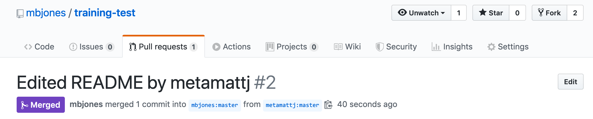
8.6.1.7 Collaborator syncs their forked repository with Owner’s repository
Now that the pull request has been merged, there is a new merge commit in the Owner’s repository that is not present in either of the Collaborator’s repositories. To fix that, Collaborator needs to sync changes from the upstream repository into the Collaborator’s forked repository on GitHub, and then pull those changes into their local repository.
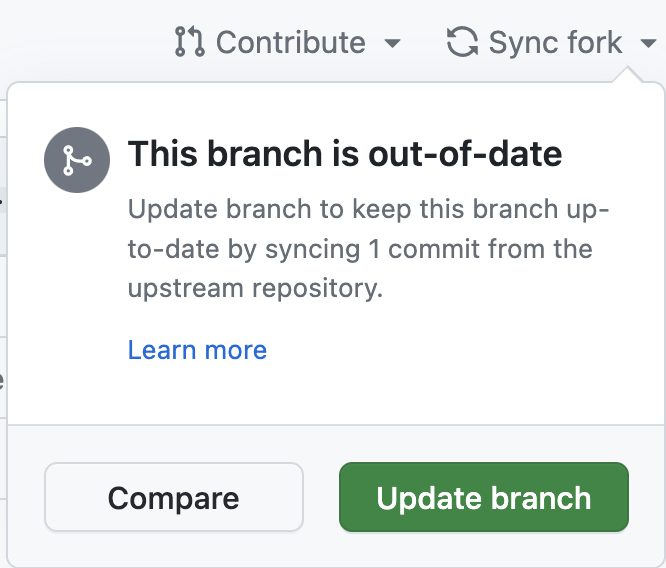
At this point, the collaborator is fully up to date.
As a final overview, when working with forked pull requests, there are four copies of the git repository (2 on the GitHub server for the owner and collaborator, and two on their local machines). In this diagram, you can see that, from the collaborator’s point of view, a git push will affect their origin repository, but they also need to git pull from the Owner’s upstream repository in order to sync their changes.

Remember: there is more than one way to do it!
There is no one-size-fits-all Git workflow, but ultimately a workflow should be simple and enhance the productivity of your team.